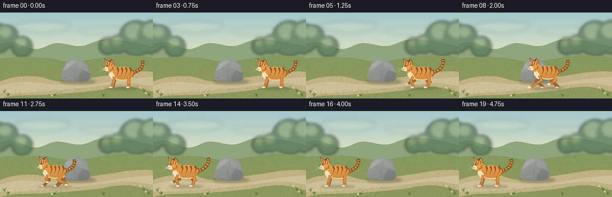
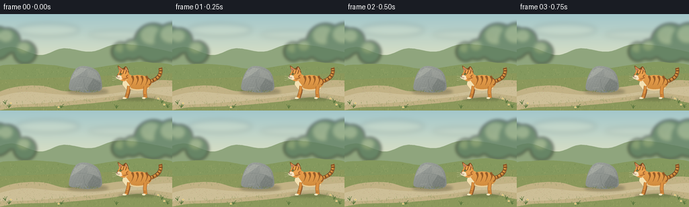

CODING AGENTS AS PIXEL WORLD MODELS
traex/GPT-6.1-Sol · dynamic_spatial_relationship_0009
点击播放 · 原生 RGB 像素
逐轮保存的候选
回放视频、检查图与代码变化。
每份候选均可单独播放。实际图片检查记录在下方工具轨迹中。
候选 01播放与检查图
点击播放 · 原生 RGB 像素


展开代码变化
--- 上一保存版本
+++ 本次保存版本
@@ -0,0 +1,232 @@
+from pathlib import Path
+import math
+import numpy as np
+from PIL import Image, ImageDraw, ImageFilter
+import artifact_io
+
+ROOT=Path(__file__).resolve().parent
+W,H,S=256,144,4
+rng=np.random.default_rng(102)
+
+def xy(points): return [(int(round(x*S)),int(round(y*S))) for x,y in points]
+def poly(im,points,fill): ImageDraw.Draw(im).polygon(xy(points),fill=fill)
+def ellipse(im,bbox,fill,outline=None,width=1):
+ ImageDraw.Draw(im).ellipse(tuple(int(round(v*S)) for v in bbox),fill=fill,outline=outline,width=max(1,int(width*S)))
+def line(im,points,fill,width=1):
+ ImageDraw.Draw(im).line(xy(points),fill=fill,width=max(1,round(width*S)),joint='curve')
+def bez(points,n=40):
+ a,b,c,d=np.array(points,float)
+ return [tuple((1-t)**3*a+3*(1-t)**2*t*b+3*(1-t)*t*t*c+t**3*d) for t in np.linspace(0,1,n)]
+def curve(im,points,fill,width=1): line(im,bez(points),fill,width)
+def blob(im,pts,fill):
+ # closed Catmull-Rom smooth outline
+ pts=np.array(pts,float); path=[]
+ for i in range(len(pts)):
+ a,b,c,d=[pts[j%len(pts)] for j in [i-1,i,i+1,i+2]]
+ for t in np.linspace(0,1,12,endpoint=False):
+ p=.5*((2*b)+(-a+c)*t+(2*a-5*b+4*c-d)*t*t+(-a+3*b-3*c+d)*t*t*t)
+ path.append(tuple(p))
+ poly(im,path,fill)
+
+def make_background():
+ yy,xx=np.mgrid[0:H*S,0:W*S]/S
+ t=np.clip(yy/78,0,1)[...,None]
+ a=np.array([163,199,203]); b=np.array([227,228,195]); arr=a*(1-t)+b*t
+ arr=np.broadcast_to(arr,(H*S,W*S,3)).copy()
+ bg=Image.fromarray(np.uint8(arr))
+ haze=Image.new('RGBA',bg.size)
+ ellipse(haze,(24,14,118,33),(255,247,211,40)); ellipse(haze,(131,25,221,36),(255,248,220,33))
+ bg=Image.alpha_composite(bg.convert('RGBA'),haze.filter(ImageFilter.GaussianBlur(4*S))).convert('RGB')
+ blob(bg,[(-20,67),(15,49),(59,61),(94,51),(135,56),(174,45),(225,50),(275,66),(276,101),(-20,101)],(143,165,125))
+ trees=Image.new('RGBA',bg.size)
+ for x,y,r in [(-6,43,25),(11,40,19),(37,57,17),(228,43,29),(257,41,28),(180,56,14),(197,53,15)]:
+ ellipse(trees,(x-r,y-r,x+r,y+r),(94,126,96,210))
+ ellipse(trees,(x-r*.65,y-r*.85,x+r*.4,y+r*.05),(131,155,107,160))
+ trees=trees.filter(ImageFilter.GaussianBlur(2.5*S))
+ bg=Image.alpha_composite(bg.convert('RGBA'),trees).convert('RGB')
+ blob(bg,[(-10,87),(26,75),(77,76),(122,82),(181,74),(222,72),(270,86),(280,165),(-10,165)],(132,153,94))
+ # meadow light gradient
+ shade=Image.new('RGBA',bg.size)
+ poly(shade,[(-1,98),(256,88),(256,144),(-1,144)],(152,151,85,95))
+ bg=Image.alpha_composite(bg.convert('RGBA'),shade).convert('RGB')
+ blob(bg,[(-10,122),(21,109),(62,107),(96,115),(130,112),(176,106),(226,99),(270,103),(270,133),(212,124),(156,131),(89,137),(27,139),(-10,143)],(194,178,133))
+ blob(bg,[(-8,126),(35,116),(92,120),(152,120),(217,111),(267,109),(265,123),(212,118),(149,125),(76,132),(2,135)],(205,191,151))
+ # textured earth and scattered grass, deterministic
+ for j in range(1500):
+ x=float(rng.uniform(0,256)); y=float(rng.uniform(80,144))
+ if y>107 and abs(y-(124-0.045*x))<9:
+ col=(185+int(rng.integers(-12,13)),170+int(rng.integers(-10,10)),130+int(rng.integers(-8,10)))
+ ellipse(bg,(x,y,x+rng.uniform(.2,.9),y+rng.uniform(.15,.45)),col)
+ else:
+ col=[(115,137,77),(145,162,99),(177,181,117),(106,127,73)][int(rng.integers(4))]
+ h=float(rng.uniform(.8,3.1))*(.3+.7*y/144)
+ line(bg,[(x,y),(x+rng.uniform(-.8,.8),y-h)],col,.23)
+ # little foreground plants at edges, not on the running route
+ for x,y in [(8,135),(13,140),(240,133),(249,140),(91,140),(173,141)]:
+ for k in range(7):
+ dx=float(rng.uniform(-4,4)); hh=float(rng.uniform(2,7))
+ curve(bg,[(x,y),(x+dx*.25,y-hh*.5),(x+dx*.7,y-hh),(x+dx,y-hh)],(88,117,61),.55)
+ for x,y in [(16,133),(235,126),(244,135),(87,139)]:
+ line(bg,[(x,y+3),(x,y)],(80,109,62),.5)
+ for ang in np.linspace(0,math.tau,5,endpoint=False):
+ ex=x+math.cos(ang)*1; ey=y+math.sin(ang)*1
+ ellipse(bg,(ex-.65,ey-.6,ex+.65,ey+.6),(238,223,162))
+ ellipse(bg,(x-.4,y-.4,x+.4,y+.4),(210,157,60))
+ # ground shadow beneath one substantial rock
+ sh=Image.new('RGBA',bg.size)
+ ellipse(sh,(100,111,161,120),(52,55,39,75))
+ bg=Image.alpha_composite(bg.convert('RGBA'),sh.filter(ImageFilter.GaussianBlur(2*S))).convert('RGB')
+ # rock mask with continuous surface shading and mineral texture
+ mask=Image.new('L',bg.size)
+ rockpts=[(103,112),(104,99),(110,85),(119,78),(134,79),(146,87),(151,102),(149,114),(130,117),(113,115)]
+ blob(mask,rockpts,255)
+ yy,xx=np.mgrid[0:H*S,0:W*S]/S
+ lighting=14-0.48*(yy-78)-.22*(xx-119)
+ noise=rng.normal(0,1.5,(H*S,W*S))
+ v=lighting+noise+2*np.sin(xx*1.5+yy*.7)
+ stone=np.stack([140+v,145+v,140+v],axis=-1)
+ bg.paste(Image.fromarray(np.uint8(np.clip(stone,0,255))),(0,0),mask)
+ detail=Image.new('RGBA',bg.size)
+ poly(detail,[(105,98),(111,86),(120,80),(130,81),(118,90)],(211,213,197,65))
+ poly(detail,[(130,81),(143,87),(149,99),(139,96),(130,94)],(175,178,169,70))
+ poly(detail,[(139,96),(150,103),(148,113),(132,116),(130,109)],(83,91,87,70))
+ curve(detail,[(112,95),(122,91),(130,95),(139,96)],(80,90,88,70),.42)
+ curve(detail,[(124,97),(125,103),(124,108),(129,113)],(73,83,81,90),.4)
+ curve(detail,[(113,111),(115,109),(119,110),(122,109)],(229,229,210,65),.5)
+ for j in range(420):
+ x=float(rng.uniform(104,150)); y=float(rng.uniform(79,116))
+ if mask.getpixel((int(x*S),int(y*S)))>0:
+ c=(220,222,204,50) if j%3==0 else (55,65,61,38)
+ ellipse(detail,(x,y,x+rng.uniform(.12,.6),y+rng.uniform(.12,.35)),c)
+ bg=Image.alpha_composite(bg.convert('RGBA'),detail).convert('RGB')
+ # a little moss anchors its bottom edge
+ for j in range(47):
+ x=float(rng.uniform(108,146)); y=float(rng.uniform(113,116))
+ ellipse(bg,(x,y,x+rng.uniform(.3,1.3),y+.45),(106+int(rng.integers(20)),122+int(rng.integers(15)),75))
+ return bg
+
+BG=make_background()
+
+def draw_cat(im,x,ground,run,phase):
+ # side-on ginger tabby; all geometry stays attached to the moving body
+ bob=-1.8*run*(.5+.5*math.sin(phase*2))
+ cy=ground-22+bob
+ stretch=1+0.075*run*math.cos(phase*2)
+ def P(a,b):return (x+a*stretch,cy+b)
+ def C(points):return [P(a,b) for a,b in points]
+ # soft moving contact shadow
+ sh=Image.new('RGBA',im.size)
+ ellipse(sh,(x-30,ground-1,x+28,ground+4),(60,52,35,62))
+ im=Image.alpha_composite(im.convert('RGBA'),sh.filter(ImageFilter.GaussianBlur(1.7*S)))
+ cat=Image.new('RGBA',im.size)
+ # Tail sweeps upward from rump with a naturally bent end
+ wag=math.sin(phase*.5)*run*2
+ tail=C([(16,-2),(29,-5),(36,-13-wag),(33,-23-wag)])
+ curve(cat,tail,(102,61,32),5.8)
+ curve(cat,tail,(183,116,48),4.8)
+ curve(cat,C([(16,-3),(29,-6),(35,-13-wag),(33,-23-wag)]),(217,150,69),2.3)
+ tailpath=bez(tail,80)
+ for j in [15,28,41,54,67,76]:
+ q=np.array(tailpath[j]); direction=np.array(tailpath[min(j+1,79)])-np.array(tailpath[max(j-1,0)])
+ normal=np.array([-direction[1],direction[0]])/(np.linalg.norm(direction)+1e-8)
+ line(cat,[tuple(q-normal*2.0),tuple(q+normal*2.0)],(120,73,34),1.7)
+ # articulated legs, alternate pairs during gallop
+ def leg(hip,side,front):
+ offset=0 if side==0 else math.pi
+ ang=phase+offset+(0.85 if front else 0)
+ swing=run*math.sin(ang)
+ lift=run*max(0,math.cos(ang))
+ hx,hy=hip
+ knee=(hx-1+swing*5,hy+8-lift*1.4)
+ ankle=(hx-swing*10-(4 if front else 0),22-bob-lift*7)
+ paw=(ankle[0]-2.0,ankle[1]+.3)
+ col=(170,103,47) if side else (219,143,63)
+ out=(113,71,38) if side else (144,86,38)
+ line(cat,C([hip,knee,ankle]),out,5.5 if not front else 4.4)
+ line(cat,C([hip,knee,ankle]),col,4.4 if not front else 3.5)
+ ellipse(cat,(*P(paw[0]-2.9,paw[1]-1.4),*P(paw[0]+2.3,paw[1]+1.25)),(224,211,171) if side else (246,232,193))
+ # transverse tabby marks on the shins
+ for l in [.45,.68]:
+ q=np.array(knee)*(1-l)+np.array(ankle)*l
+ line(cat,C([(q[0]-1.4,q[1]),(q[0]+1.1,q[1]+.2)]),(125,76,37),.85)
+ leg((11,5),1,False);leg((-13,5),1,True)
+ # torso smoothly shaded silhouette
+ mask=Image.new('L',im.size)
+ ellipse(mask,(*P(-20,-12),*P(20,10)),255)
+ ellipse(mask,(*P(-22,-13),*P(-6,10)),255)
+ yy,xx=np.mgrid[0:H*S,0:W*S]/S
+ z=(yy-(cy-12))/24
+ light=12-31*np.clip(z,0,1)+5*np.cos((xx-x)/13)
+ pixels=np.stack([219+light,148+light*.8,68+light*.6,np.full_like(xx,255)],-1)
+ coat=Image.fromarray(np.uint8(np.clip(pixels,0,255)),'RGBA')
+ cat.paste(coat,(0,0),mask)
+ # creamy chest and lower belly
+ blob(cat,C([(-20,-5),(-15,0),(-11,7),(-16,10),(-20,6),(-23,1)]),(242,224,177))
+ curve(cat,C([(-11,8),(-2,12),(11,9),(16,7)]),(235,205,151),2)
+ # tapered flank stripes follow the shape of the body
+ for a in [-8,-1,6,13]:
+ blob(cat,C([(a-2,-10),(a+1,-10.6),(a+2,-6),(a+.3,-1),(a-2,3),(a-1,0),(a-.1,-5)]),(148,91,39))
+ curve(cat,C([(a-1.2,-9),(a+.2,-6),(a+.4,-3),(a-.8,0)]),(172,107,43),.6)
+ curve(cat,C([(12,-9),(20,-6),(21,0),(16,3)]),(138,84,38),1.4)
+ # fine fur glints over back, explicitly clipped by torso mask
+ fur=Image.new('RGBA',im.size)
+ rr=np.random.default_rng(68)
+ for j in range(165):
+ a=float(rr.uniform(-18,18)); b=float(rr.uniform(-11,9))
+ px,py=P(a,b)
+ if 0<=px<W and 0<=py<H and mask.getpixel((int(px*S),int(py*S))):
+ line(fur,[(px,py),(px+.55,py+.22)],(255,214,144,55) if j%2 else (111,69,33,32),.18)
+ cat=Image.alpha_composite(cat,fur)
+ leg((11,5),0,False);leg((-14,4),0,True)
+ # head, triangular ears, cheek and muzzle: visibly feline silhouette
+ headbob=run*.7*math.sin(phase)
+ def Q(a,b):return P(a,b+headbob)
+ def D(points):return [Q(a,b) for a,b in points]
+ blob(cat,D([(-28,-17),(-30,-26),(-23,-22),(-18,-25),(-14,-18),(-14,-9),(-20,-3),(-28,-6),(-31,-12)]),(124,75,35))
+ poly(cat,D([(-28,-17),(-29,-25),(-22,-20)]),(220,148,75))
+ poly(cat,D([(-27.5,-19),(-28,-23),(-24,-20)]),(183,118,100))
+ poly(cat,D([(-20,-18),(-18,-24),(-14.5,-18)]),(231,165,87))
+ poly(cat,D([(-18.8,-19),(-17.9,-22),(-16,-18.7)]),(190,122,104))
+ ellipse(cat,(*Q(-30,-20),*Q(-13,-3)),(224,149,69))
+ ellipse(cat,(*Q(-27.5,-19),*Q(-15.5,-9)),(233,161,79))
+ # top and cheek tabby markings
+ for a in [-25,-21,-17]:
+ curve(cat,D([(a,-19),(a-1,-17),(a-1,-15),(a-2,-14)]),(129,77,34),1.0)
+ curve(cat,D([(-15,-12),(-18,-11),(-18,-9),(-16,-9)]),(145,84,36),1)
+ curve(cat,D([(-14.7,-8),(-18,-7),(-20,-6),(-22,-6)]),(155,90,40),.8)
+ # near eye set in dark almond with a green iris and vertical pupil
+ blob(cat,D([(-28.4,-13.3),(-25.8,-15),(-23.8,-13.6),(-25.7,-12)]),(84,66,32))
+ ellipse(cat,(*Q(-27.7,-14.3),*Q(-24.8,-12.3)),(171,190,98))
+ ellipse(cat,(*Q(-26.8,-14.2),*Q(-26,-12.3)),(34,41,29))
+ ellipse(cat,(*Q(-27.2,-14.2),*Q(-26.65,-13.65)),(254,249,217))
+ # pale muzzle projects left of skull
+ ellipse(cat,(*Q(-32.5,-11.8),*Q(-24.2,-6.1)),(246,228,192))
+ ellipse(cat,(*Q(-29.1,-8.3),*Q(-23.4,-4.9)),(245,225,187))
+ poly(cat,D([(-32.2,-10.7),(-30.1,-10.4),(-31.6,-9.1)]),(122,73,63))
+ curve(cat,D([(-31.3,-9),(-30.8,-7.6),(-28.9,-7.8),(-28,-8.1)]),(91,63,45),.42)
+ for a,b in [(-29,-9),(-27.7,-8.5),(-28.5,-7.5)]:
+ ellipse(cat,(*Q(a-.2,b-.2),*Q(a+.2,b+.2)),(127,98,65))
+ for b,end in [(-8.7,-10.5),(-7.7,-7),(-6.7,-4)]:
+ curve(cat,D([(-28.7,b),(-32,b-.4),(-36,end),(-38,end)]),(252,242,211,205),.28)
+ # fur cheek fringe
+ for i in range(4):line(cat,D([(-18+i*.75,-5.2-i*.45),(-19+i*.8,-3.4-i*.4)]),(235,185,112),.45)
+ return Image.alpha_composite(im,cat).convert('RGB')
+
+frames=[]
+for i in range(20):
+ if i<=3:
+ x=205; run=0; phase=i*.45
+ elif i<=15:
+ u=(i-3)/12
+ # smooth start and braking with an unmistakable leftward traverse
+ ease=u*u*(3-2*u)
+ x=205-151*ease
+ run=min(1,(i-3)/2,(16-i)/2)
+ phase=(i-3)*1.4
+ else:
+ x=54;run=0;phase=16.8+(i-15)*.3
+ frame=draw_cat(BG.copy(),x,125,run,phase)
+ frame=frame.resize((W,H),Image.Resampling.LANCZOS)
+ frames.append(np.asarray(frame,dtype=np.uint8))
+artifact_io.save(np.stack(frames),ROOT)
+print('Saved',len(frames),'RGB frames',np.stack(frames).shape)
可观测工具轨迹
实际执行的命令与返回图片。
命令 1exit 0
/bin/bash -lc 'ls -la && cat prompt.txt && cat GENERATION_RULES.md && cat task_spec.json'
命令 2exit 0
/bin/bash -lc 'cat artifact_io.py'
命令 3exit 0
/bin/bash -lc "cat > generate.py <<'PY'
from pathlib import Path
import math
import numpy as np
from PIL import Image, ImageDraw, ImageFilter
import artifact_io
ROOT=Path(__file__).resolve().parent
W,H,S=256,144,4
rng=np.random.default_rng(102)
def xy(points): return [(int(round(x*S)),int(round(y*S))) for x,y in points]
def poly(im,points,fill): ImageDraw.Draw(im).polygon(xy(points),fill=fill)
def ellipse(im,bbox,fill,outline=None,width=1):
ImageDraw.Draw(im).ellipse(tuple(int(round(v*S)) for v in bbox),fill=fill,outline=outline,width=max(1,int(width*S)))
def line(im,points,fill,width=1):
ImageDraw.Draw(im).line(xy(points),fill=fill,width=max(1,round(width*S)),joint='curve')
def bez(points,n=40):
a,b,c,d=np.array(points,float)
return [tuple((1-t)**3*a+3*(1-t)**2*t*b+3*(1-t)*t*t*c+t**3*d) for t in np.linspace(0,1,n)]
def curve(im,points,fill,width=1): line(im,bez(points),fill,width)
def blob(im,pts,fill):
# closed Catmull-Rom smooth outline
pts=np.array(pts,float); path=[]
for i in range(len(pts)):
a,b,c,d=[pts[j%len(pts)] for j in [i-1,i,i+1,i+2]]
for t in np.linspace(0,1,12,endpoint=False):
p=.5*((2*b)+(-a+c)*t+(2*a-5*b+4*c-d)*t*t+(-a+3*b-3*c+d)*t*t*t)
path.append(tuple(p))
poly(im,path,fill)
def make_background():
yy,xx=np.mgrid[0:H*S,0:W*S]/S
t=np.clip(yy/78,0,1)[...,None]
a=np.array([163,199,203]); b=np.array([227,228,195]); arr=a*(1-t)+b*t
arr=np.broadcast_to(arr,(H*S,W*S,3)).copy()
bg=Image.fromarray(np.uint8(arr))
haze=Image.new('RGBA',bg.size)
ellipse(haze,(24,14,118,33),(255,247,211,40)); ellipse(haze,(131,25,221,36),(255,248,220,33))
bg=Image.alpha_composite(bg.convert('RGBA'),haze.filter(ImageFilter.GaussianBlur(4*S))).convert('RGB')
blob(bg,[(-20,67),(15,49),(59,61),(94,51),(135,56),(174,45),(225,50),(275,66),(276,101),(-20,101)],(143,165,125))
trees=Image.new('RGBA',bg.size)
for x,y,r in [(-6,43,25),(11,40,19),(37,57,17),(228,43,29),(257,41,28),(180,56,14),(197,53,15)]:
ellipse(trees,(x-r,y-r,x+r,y+r),(94,126,96,210))
ellipse(trees,(x-r*.65,y-r*.85,x+r*.4,y+r*.05),(131,155,107,160))
trees=trees.filter(ImageFilter.GaussianBlur(2.5*S))
bg=Image.alpha_composite(bg.convert('RGBA'),trees).convert('RGB')
blob(bg,[(-10,87),(26,75),(77,76),(122,82),(181,74),(222,72),(270,86),(280,165),(-10,165)],(132,153,94))
# meadow light gradient
shade=Image.new('RGBA',bg.size)
poly(shade,[(-1,98),(256,88),(256,144),(-1,144)],(152,151,85,95))
bg=Image.alpha_composite(bg.convert('RGBA'),shade).convert('RGB')
blob(bg,[(-10,122),(21,109),(62,107),(96,115),(130,112),(176,106),(226,99),(270,103),(270,133),(212,124),(156,131),(89,137),(27,139),(-10,143)],(194,178,133))
blob(bg,[(-8,126),(35,116),(92,120),(152,120),(217,111),(267,109),(265,123),(212,118),(149,125),(76,132),(2,135)],(205,191,151))
# textured earth and scattered grass, deterministic
for j in range(1500):
x=float(rng.uniform(0,256)); y=float(rng.uniform(80,144))
if y>107 and abs(y-(124-0.045*x))<9:
col=(185+int(rng.integers(-12,13)),170+int(rng.integers(-10,10)),130+int(rng.integers(-8,10)))
ellipse(bg,(x,y,x+rng.uniform(.2,.9),y+rng.uniform(.15,.45)),col)
else:
col=[(115,137,77),(145,162,99),(177,181,117),(106,127,73)][int(rng.integers(4))]
h=float(rng.uniform(.8,3.1))*(.3+.7*y/144)
line(bg,[(x,y),(x+rng.uniform(-.8,.8),y-h)],col,.23)
# little foreground plants at edges, not on the running route
for x,y in [(8,135),(13,140),(240,133),(249,140),(91,140),(173,141)]:
for k in range(7):
dx=float(rng.uniform(-4,4)); hh=float(rng.uniform(2,7))
curve(bg,[(x,y),(x+dx*.25,y-hh*.5),(x+dx*.7,y-hh),(x+dx,y-hh)],(88,117,61),.55)
for x,y in [(16,133),(235,126),(244,135),(87,139)]:
line(bg,[(x,y+3),(x,y)],(80,109,62),.5)
for ang in np.linspace(0,math.tau,5,endpoint=False):
ex=x+math.cos(ang)*1; ey=y+math.sin(ang)*1
ellipse(bg,(ex-.65,ey-.6,ex+.65,ey+.6),(238,223,162))
ellipse(bg,(x-.4,y-.4,x+.4,y+.4),(210,157,60))
# ground shadow beneath one substantial rock
sh=Image.new('RGBA',bg.size)
ellipse(sh,(100,111,161,120),(52,55,39,75))
bg=Image.alpha_composite(bg.convert('RGBA'),sh.filter(ImageFilter.GaussianBlur(2*S))).convert('RGB')
# rock mask with continuous surface shading and mineral texture
mask=Image.new('L',bg.size)
rockpts=[(103,112),(104,99),(110,85),(119,78),(134,79),(146,87),(151,102),(149,114),(130,117),(113,115)]
blob(mask,rockpts,255)
yy,xx=np.mgrid[0:H*S,0:W*S]/S
lighting=14-0.48*(yy-78)-.22*(xx-119)
noise=rng.normal(0,1.5,(H*S,W*S))
v=lighting+noise+2*np.sin(xx*1.5+yy*.7)
stone=np.stack([140+v,145+v,140+v],axis=-1)
bg.paste(Image.fromarray(np.uint8(np.clip(stone,0,255))),(0,0),mask)
detail=Image.new('RGBA',bg.size)
poly(detail,[(105,98),(111,86),(120,80),(130,81),(118,90)],(211,213,197,65))
poly(detail,[(130,81),(143,87),(149,99),(139,96),(130,94)],(175,178,169,70))
poly(detail,[(139,96),(150,103),(148,113),(132,116),(130,109)],(83,91,87,70))
curve(detail,[(112,95),(122,91),(130,95),(139,96)],(80,90,88,70),.42)
curve(detail,[(124,97),(125,103),(124,108),(129,113)],(73,83,81,90),.4)
curve(detail,[(113,111),(115,109),(119,110),(122,109)],(229,229,210,65),.5)
for j in range(420):
x=float(rng.uniform(104,150)); y=float(rng.uniform(79,116))
if mask.getpixel((int(x*S),int(y*S)))>0:
c=(220,222,204,50) if j%3==0 else (55,65,61,38)
ellipse(detail,(x,y,x+rng.uniform(.12,.6),y+rng.uniform(.12,.35)),c)
bg=Image.alpha_composite(bg.convert('RGBA'),detail).convert('RGB')
# a little moss anchors its bottom edge
for j in range(47):
x=float(rng.uniform(108,146)); y=float(rng.uniform(113,116))
ellipse(bg,(x,y,x+rng.uniform(.3,1.3),y+.45),(106+int(rng.integers(20)),122+int(rng.integers(15)),75))
return bg
BG=make_background()
def draw_cat(im,x,ground,run,phase):
# side-on ginger tabby; all geometry stays attached to the moving body
bob=-1.8*run*(.5+.5*math.sin(phase*2))
cy=ground-22+bob
stretch=1+0.075*run*math.cos(phase*2)
def P(a,b):return (x+a*stretch,cy+b)
def C(points):return [P(a,b) for a,b in points]
# soft moving contact shadow
sh=Image.new('RGBA',im.size)
ellipse(sh,(x-30,ground-1,x+28,ground+4),(60,52,35,62))
im=Image.alpha_composite(im.convert('RGBA'),sh.filter(ImageFilter.GaussianBlur(1.7*S)))
cat=Image.new('RGBA',im.size)
# Tail sweeps upward from rump with a naturally bent end
wag=math.sin(phase*.5)*run*2
tail=C([(16,-2),(29,-5),(36,-13-wag),(33,-23-wag)])
curve(cat,tail,(102,61,32),5.8)
curve(cat,tail,(183,116,48),4.8)
curve(cat,C([(16,-3),(29,-6),(35,-13-wag),(33,-23-wag)]),(217,150,69),2.3)
tailpath=bez(tail,80)
for j in [15,28,41,54,67,76]:
q=np.array(tailpath[j]); direction=np.array(tailpath[min(j+1,79)])-np.array(tailpath[max(j-1,0)])
normal=np.array([-direction[1],direction[0]])/(np.linalg.norm(direction)+1e-8)
line(cat,[tuple(q-normal*2.0),tuple(q+normal*2.0)],(120,73,34),1.7)
# articulated legs, alternate pairs during gallop
def leg(hip,side,front):
offset=0 if side==0 else math.pi
ang=phase+offset+(0.85 if front else 0)
swing=run*math.sin(ang)
lift=run*max(0,math.cos(ang))
hx,hy=hip
knee=(hx-1+swing*5,hy+8-lift*1.4)
ankle=(hx-swing*10-(4 if front else 0),22-bob-lift*7)
paw=(ankle[0]-2.0,ankle[1]+.3)
col=(170,103,47) if side else (219,143,63)
out=(113,71,38) if side else (144,86,38)
line(cat,C([hip,knee,ankle]),out,5.5 if not front else 4.4)
line(cat,C([hip,knee,ankle]),col,4.4 if not front else 3.5)
ellipse(cat,(*P(paw[0]-2.9,paw[1]-1.4),*P(paw[0]+2.3,paw[1]+1.25)),(224,211,171) if side else (246,232,193))
# transverse tabby marks on the shins
for l in [.45,.68]:
q=np.array(knee)*(1-l)+np.array(ankle)*l
line(cat,C([(q[0]-1.4,q[1]),(q[0]+1.1,q[1]+.2)]),(125,76,37),.85)
leg((11,5),1,False);leg((-13,5),1,True)
# torso smoothly shaded silhouette
mask=Image.new('L',im.size)
ellipse(mask,(*P(-20,-12),*P(20,10)),255)
ellipse(mask,(*P(-22,-13),*P(-6,10)),255)
yy,xx=np.mgrid[0:H*S,0:W*S]/S
z=(yy-(cy-12))/24
light=12-31*np.clip(z,0,1)+5*np.cos((xx-x)/13)
pixels=np.stack([219+light,148+light*.8,68+light*.6,np.full_like(xx,255)],-1)
coat=Image.fromarray(np.uint8(np.clip(pixels,0,255)),'RGBA')
cat.paste(coat,(0,0),mask)
# creamy chest and lower belly
blob(cat,C([(-20,-5),(-15,0),(-11,7),(-16,10),(-20,6),(-23,1)]),(242,224,177))
curve(cat,C([(-11,8),(-2,12),(11,9),(16,7)]),(235,205,151),2)
# tapered flank stripes follow the shape of the body
for a in [-8,-1,6,13]:
blob(cat,C([(a-2,-10),(a+1,-10.6),(a+2,-6),(a+.3,-1),(a-2,3),(a-1,0),(a-.1,-5)]),(148,91,39))
curve(cat,C([(a-1.2,-9),(a+.2,-6),(a+.4,-3),(a-.8,0)]),(172,107,43),.6)
curve(cat,C([(12,-9),(20,-6),(21,0),(16,3)]),(138,84,38),1.4)
# fine fur glints over back, explicitly clipped by torso mask
fur=Image.new('RGBA',im.size)
rr=np.random.default_rng(68)
for j in range(165):
a=float(rr.uniform(-18,18)); b=float(rr.uniform(-11,9))
px,py=P(a,b)
if 0<=px<W and 0<=py<H and mask.getpixel((int(px*S),int(py*S))):
line(fur,[(px,py),(px+.55,py+.22)],(255,214,144,55) if j%2 else (111,69,33,32),.18)
cat=Image.alpha_composite(cat,fur)
leg((11,5),0,False);leg((-14,4),0,True)
# head, triangular ears, cheek and muzzle: visibly feline silhouette
headbob=run*.7*math.sin(phase)
def Q(a,b):return P(a,b+headbob)
def D(points):return [Q(a,b) for a,b in points]
blob(cat,D([(-28,-17),(-30,-26),(-23,-22),(-18,-25),(-14,-18),(-14,-9),(-20,-3),(-28,-6),(-31,-12)]),(124,75,35))
poly(cat,D([(-28,-17),(-29,-25),(-22,-20)]),(220,148,75))
poly(cat,D([(-27.5,-19),(-28,-23),(-24,-20)]),(183,118,100))
poly(cat,D([(-20,-18),(-18,-24),(-14.5,-18)]),(231,165,87))
poly(cat,D([(-18.8,-19),(-17.9,-22),(-16,-18.7)]),(190,122,104))
ellipse(cat,(*Q(-30,-20),*Q(-13,-3)),(224,149,69))
ellipse(cat,(*Q(-27.5,-19),*Q(-15.5,-9)),(233,161,79))
# top and cheek tabby markings
for a in [-25,-21,-17]:
curve(cat,D([(a,-19),(a-1,-17),(a-1,-15),(a-2,-14)]),(129,77,34),1.0)
curve(cat,D([(-15,-12),(-18,-11),(-18,-9),(-16,-9)]),(145,84,36),1)
curve(cat,D([(-14.7,-8),(-18,-7),(-20,-6),(-22,-6)]),(155,90,40),.8)
# near eye set in dark almond with a green iris and vertical pupil
blob(cat,D([(-28.4,-13.3),(-25.8,-15),(-23.8,-13.6),(-25.7,-12)]),(84,66,32))
ellipse(cat,(*Q(-27.7,-14.3),*Q(-24.8,-12.3)),(171,190,98))
ellipse(cat,(*Q(-26.8,-14.2),*Q(-26,-12.3)),(34,41,29))
ellipse(cat,(*Q(-27.2,-14.2),*Q(-26.65,-13.65)),(254,249,217))
# pale muzzle projects left of skull
ellipse(cat,(*Q(-32.5,-11.8),*Q(-24.2,-6.1)),(246,228,192))
ellipse(cat,(*Q(-29.1,-8.3),*Q(-23.4,-4.9)),(245,225,187))
poly(cat,D([(-32.2,-10.7),(-30.1,-10.4),(-31.6,-9.1)]),(122,73,63))
curve(cat,D([(-31.3,-9),(-30.8,-7.6),(-28.9,-7.8),(-28,-8.1)]),(91,63,45),.42)
for a,b in [(-29,-9),(-27.7,-8.5),(-28.5,-7.5)]:
ellipse(cat,(*Q(a-.2,b-.2),*Q(a+.2,b+.2)),(127,98,65))
for b,end in [(-8.7,-10.5),(-7.7,-7),(-6.7,-4)]:
curve(cat,D([(-28.7,b),(-32,b-.4),(-36,end),(-38,end)]),(252,242,211,205),.28)
# fur cheek fringe
for i in range(4):line(cat,D([(-18+i*.75,-5.2-i*.45),(-19+i*.8,-3.4-i*.4)]),(235,185,112),.45)
return Image.alpha_composite(im,cat).convert('RGB')
frames=[]
for i in range(20):
if i<=3:
x=205; run=0; phase=i*.45
elif i<=15:
u=(i-3)/12
# smooth start and braking with an unmistakable leftward traverse
ease=u*u*(3-2*u)
x=205-151*ease
run=min(1,(i-3)/2,(16-i)/2)
phase=(i-3)*1.4
else:
x=54;run=0;phase=16.8+(i-15)*.3
frame=draw_cat(BG.copy(),x,125,run,phase)
frame=frame.resize((W,H),Image.Resampling.LANCZOS)
frames.append(np.asarray(frame,dtype=np.uint8))
artifact_io.save(np.stack(frames),ROOT)
print('Saved',len(frames),'RGB frames',np.stack(frames).shape)
PY
python generate.py"命令 4exit 0
/bin/bash -lc "python - <<'PY'
from pathlib import Path
import numpy as np
p=Path('.')
a=np.load('pixels.npz')['pixels']
assert a.shape==(144,256,20)
assert len(list((p/'frames').glob('*.png')))==20
for name in ['generate.py','pixels.npz','index.html','inspection.png','transition_check.png']:
assert (p/name).is_file()
print(name,(p/name).stat().st_size,'bytes')
PY"保存候选 1 份；完成命令 4 次；可验证图片返回 0 张。原始 API 响应与完整日志保留在本地。